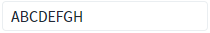
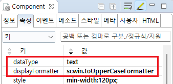

Input의 'displayFormatter' 속성을 사용하여 입력 값을 대문자로 표시되도록 설정한 예제입니다.
displayFormatter 속성은 displayFormat 속성과 동시 적용을 할 수 없습니다.
'displayFormatter' 속성 설정
1
STEP 1: Input에 소문자를 입력합니다.
Input에 소문자 'abcdefgh'를 입력합니다.
Image 1.브라우저(Chrome) 실행 예시
2
STEP 2: Input에서 포커스를 제거합니다.
'Tab' 키 또는 'Enter' 키를 누르거나 Input 외의 영역을 클릭합니다.
3
STEP 3: 실행 결과를 확인합니다.
Input에 'ABCDEFGH'가 표시됩니다.
Image 2.브라우저(Chrome) 실행 예시

Input이 포커스되어 입력할 수 있는 상태가 되면 원래 값인 'abcdefgh'이 표시됩니다.
1
STEP 1: Input의 속성을 정의합니다.
[필수] displayFormatter
화면에 표시할 값을 가공할 메소드명을 설정합니다. displayFormat 속성과 동시에 설정할 수 없습니다.
[필수] dataType
[default: text, number, float, date, time, bigDecimal,euro] 입력 값의 데이터 타입
Image 3.웹스퀘어 스튜디오의 Component View - 속성 설정 예시

Example 1.Source
<!-- input 의 소스 본문 예시 --> <w2:Input dataType="text" displayFormatter="scwin.toUpperCaseFormatter" id="ibx_exam2"> </w2:Input>
2
STEP 2: 'scwin.toUpperCaseFormatter' 메소드를 정의합니다.
Example 2.Script
//Input 'ibx_exam2'의 displayFormatter 메소드 scwin.toUpperCaseFormatter = function (value) { // 입력 값을 대문자로 변경하여 반환합니다. return value.toUpperCase(); };
dataType
displayFormatter